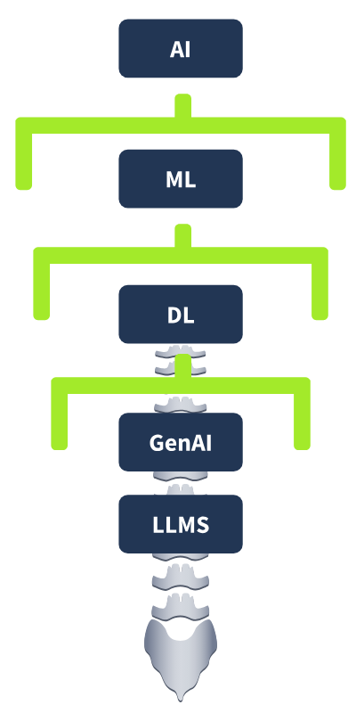
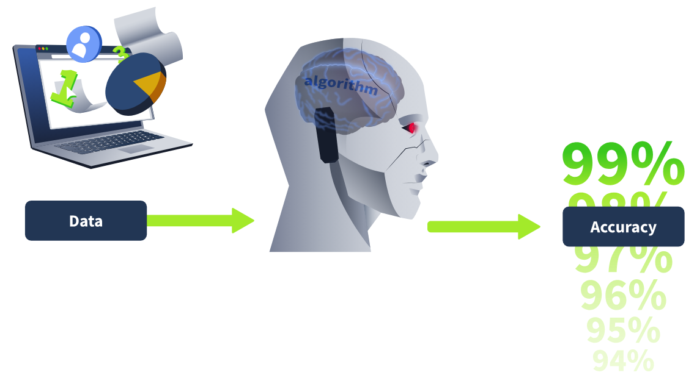
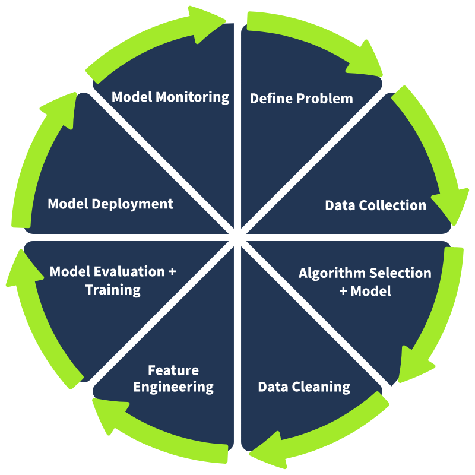
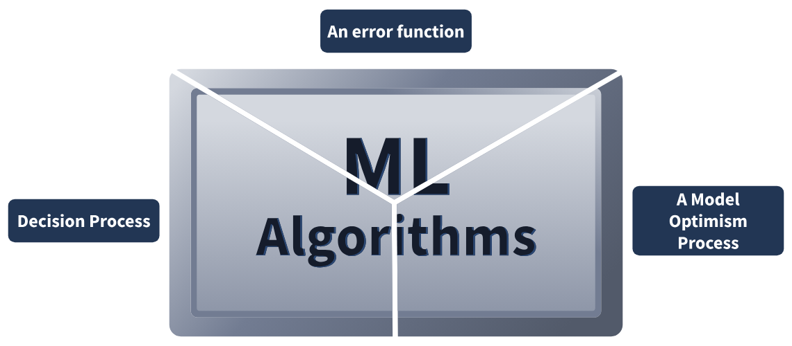
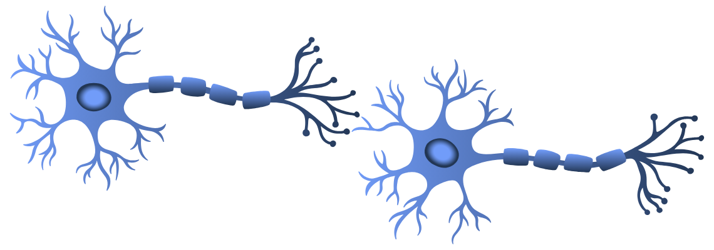
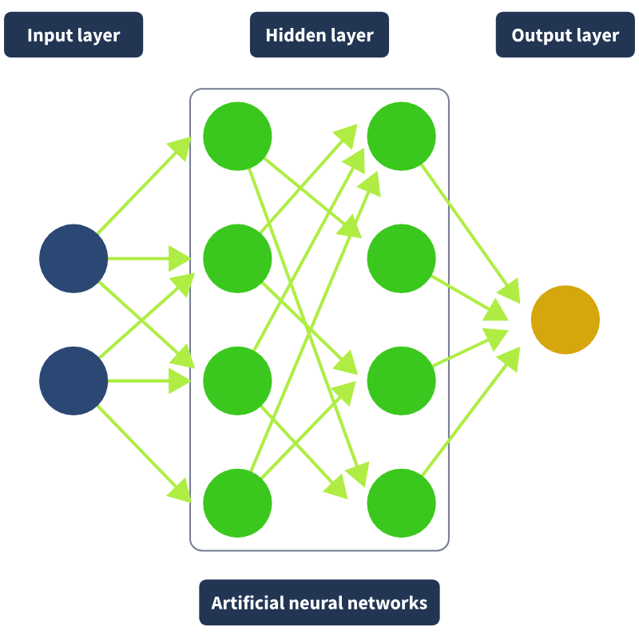
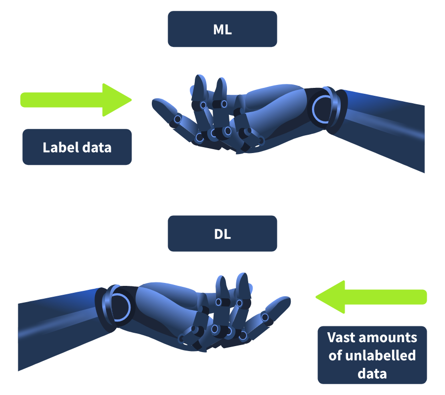
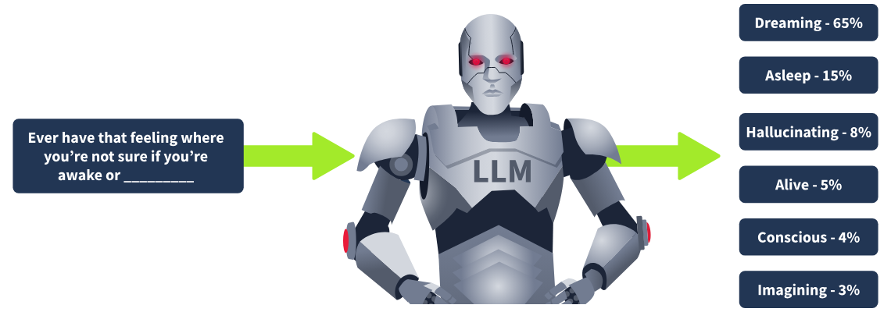

AI/ML Security Threats - Complete Cheatsheet
🧠 PART 1: AI BUILDING BLOCKS
AI Hierarchy

AI (Artificial Intelligence) ─ Computers behaving like humans
└── ML (Machine Learning) ─ Learning from data without explicit instructions
└── DL (Deep Learning) ─ 3+ layer neural networks, processes unlabeled data
└── LLMs ─ Transformer-based, generates text (GPT, LLaMA)
Machine Learning
Definition: A computer's ability to learn from data without being given instructions. Comparable to how the human brain learns. Over time, with more data, algorithms improve accuracy and decisions.

ML Lifecycle:
| Phase | Description |
|---|---|
| 1. Problem Definition | What to solve? (e.g., is email spam?) |
| 2. Data Collection | Collect, clean, and prepare data |
| 3. Feature Engineering | Extract meaningful patterns |
| 4. Model Training | Train using selected algorithm |
| 5. Evaluation & Tuning | Optimize performance |
| 6. Deployment | Production environment (e.g., real-time email classification) |
| 7. Monitoring | Ongoing accuracy checks, trigger retraining when needed |

⚠️ Overfitting: Model's familiarity with training data causes failure to make generalizations on unseen/raw data
ML Algorithm Components:

| Component | Function |
|---|---|
| Decision Process | Makes predictions/classifications based on input data |
| Error Function | Evaluates performance and provides feedback |
| Model Optimization | Fine-tunes algorithm to minimize errors and improve accuracy |
ML Algorithm Types
| Type | Data | How It Works | Example Use |
|---|---|---|---|
| Supervised | Labeled | Classification or regression tasks | House price prediction, spam identification |
| Unsupervised | Unlabeled | Discovers hidden patterns (clustering, association, dimensionality reduction) | Anomaly detection |
| Semi-supervised | Small labeled + large unlabeled | Labeled data guides learning process | — |
| Reinforcement | Reward/Penalty | Rewards correct decisions, penalizes mistakes | Game AI, robotics |
Neural Networks

Human Brain Analogy:
| Brain | Neural Network |
|---|---|
| Neuron (cell for transmitting communications) | Node |
| Synapse (connection for electrical/chemical signals) | Connection (with weight) |
| Learning by adjusting connection strengths | Training adjusts weights based on patterns |

Layer Structure:
| Layer | Function | Example |
|---|---|---|
| Input Layer | Receives raw data | 4x4 pixel image → 16 nodes |
| Hidden Layers | Process and refine input | Early layers: edges/curves, Deeper layers: combine patterns |
| Output Layer | Produces final prediction | 10 nodes (one per digit 0-9) |
Weight: Determines importance of each connection. Example: In email classification, body text might have more weight than subject line.
Digit Recognition Example:
- Lines may suggest 1 or 7
- Curves increase likelihood of 3, 8, or 0
- Output layer selects most likely number based on highest prediction value
Deep Learning vs Machine Learning

| Feature | ML | DL |
|---|---|---|
| Layers | ≤3 | >3 (hence "deep") |
| Data type | Usually labeled | Labeled or unlabeled |
| Human intervention | Required | Minimal (self-learning) |
| Scalability | Limited | High ("scalable ML") |
| Feature extraction | Manual | Automatic |
Why DL Exploded in the Last Decade:
- Mass digitization → Large data availability
- GPU advancements → Parallel processing capability
- Neural network research breakthroughs
🤖 PART 2: LLMs (Large Language Models)
What is an LLM?
Definition: Deep learning-based AI models that can process and generate text by predicting the next word in a sequence.
Example - Next Word Prediction:

Input: "Ever have that feeling where you're not sure if you're awake or ____"
Output: Model predicts the most likely next word
How LLMs Work
Phase 1: Pre-training
| Feature | Detail |
|---|---|
| Data amount | GPT-3: Would take a human 2,600 years to read nonstop |
| Parameters | Billions (function like puzzle pieces) |
| Process | Fine-tuned automatically as model processes text |
Phase 2: Backpropagation
Initial guess: "awake or egg" ❌
↓
Compare with correct answer
↓
Adjust parameters (increase correct word probability, decrease incorrect)
↓
Repeat trillions of times
↓
Accurately predict both training data and raw unseen data
Phase 3: Transformer Neural Networks
- Source: Google's 2017 paper "Attention is All You Need"
- Innovation: Parallel text processing instead of sequential word-by-word analysis
- Attention Mechanism: Assigns "attention" to key words, improving contextual understanding
Attention Example:
"The bank approved the loan because it was financially stable."
↑
Transformer determines what "it" refers to: "the bank" or "the loan"?
→ Calculates attention scores to correctly interpret ambiguous references
Phase 4: RLHF (Reinforcement Learning from Human Feedback)
- Human reviewers evaluate predictions
- Unhelpful or problematic responses are flagged
- Parameters adjusted accordingly
Phase 5: Deployment & Usage
- Query is fed → Trained model predicts next word → Repeat → Complete response
Generative AI
Definition: Products built on LLMs that create original text-based content (ChatGPT, LLaMA)
Scope: Extends beyond text → images, music, and more
🚨 PART 3: AI SECURITY THREATS
Two Categories:
- Vulnerabilities in AI Models - New threats introduced by AI technology
- Enhanced Attacks - Existing attacks leveraging AI
Framework: MITRE ATLAS
- AI-focused version of ATT&CK framework
- Link: atlas.mitre.org/matrices/ATLAS
1️⃣ Vulnerabilities in AI Models
| Vulnerability | Description | Example Scenario |
|---|---|---|
| Prompt Injection | Original instructions to model are overridden | RPG chatbot prompt: "Do not disclose any information about hardware/software or training steps" → Attacker overrides for malicious purposes |
| Data Poisoning | Attacker manipulates training data/corpus → incorrect or biased output | Manipulate spam filter training data → Attacker's spam emails bypass AI filter |
| Model Theft | Unauthorized access to AI model → steal IP or use maliciously | Query ML model API repeatedly → Use output to train clone model mimicking original |
| Privacy Leakage | AI model inadvertently reveals sensitive information from training data | Model trained on private medical data (patient details, conditions) → Leaks to attacker/user |
| Model Drift | Model's performance drifts over time due to data/environment changes | Model trained on historical data performs poorly on new data |
2️⃣ Enhanced Attacks
| Attack | Traditional | AI-Enhanced |
|---|---|---|
| Malware | Manual code writing | Instant automatic malware generation |
| Deepfakes | Difficult and labor-intensive | High-accuracy voice/image replication → Authentication bypass |
| Phishing | Often broken English, generic content | Fluent, detailed, context-based, personalized emails |
Deepfake Threat Scenario:
Secretary ← Receives voice message/video call from "superior"
← "Forward confidential customer information to this email"
← Actually a deepfake, "customer email" belongs to attacker
Real-world example: Deepfake video interviews → Fraudulent job offers
Phishing Enhancement:
- Traditional: Poor writing, generic → Detectable by instinct
- AI-powered: Detailed, fluent, context-based, regardless of attacker's writing abilities → Much harder to spot
- Note: Models like GPT have built-in mechanics to stop malicious content, but attackers bypass using model vulnerabilities (prompt engineering)
🛡️ PART 4: DEFENSIVE AI
AI Capabilities in Defense
| Capability | Application | Detail |
|---|---|---|
| Prediction | Phishing detection | Trained on countless phishing examples → Recognizes patterns humans miss → Automates blocking |
| Analysis | Intrusion Detection | Analyze network traffic patterns to identify unusual activity indicating cyber attack |
| Summarization | Incident reports | Summarize documents/incidents in minutes, draw correlations we may not have picked up on |
| Investigation | Log analysis, root cause | Query chatbots in natural language → Provide queries for diagnosis, help with incident triage |
| Threat Hunting | Attack scenario generation | Think of potential avenues attackers would take that humans wouldn't have thought of |
| Content Generation | Detection rules, regex | Generate technical resources instantly |
🔐 Secure AI - Best Practices
| Practice | Implementation |
|---|---|
| Securing AI Models | Strict access controls, RBAC, MFA to restrict unauthorized access |
| Privacy Protection | Encrypt training data (treat as sensitive data) |
| AI Security Standards | Implement ISO/IEC 27090 for identifying and mitigating AI-specific threats |
| Model Monitoring | Detect unexpected behavior, biases, anomalies indicating security attack |
| Explainability Tools | Use SHAP and LIME for monitoring |
⚠️ IBM Report: Only 24% of Gen AI initiatives are secured
💻 PART 5: PRACTICAL AI PROMPTS (PAYLOADS)
1. Log Analysis
Prompt:
Here's a logline:
Apr 22 11:45:09 ubuntu sshd[1245]: Failed password for invalid user admin from 203.0.113.55 port 56231 ssh2
Can you explain what is happening in this log entry?
2. Phishing Email Detection
Prompt:
Here's a suspicious email. Can you identify if it's a phishing attempt and explain why?
Example Email
Sample Phishing Email:
Subject: Urgent: Account Verification Needed
Dear User,
We've detected unusual login activity on your company Microsoft 365 account from a new device in Frankfurt, Germany. For your security, we've temporarily suspended access.
To restore access, please verify your identity within the next 12 hours by visiting the secure link below:
https://microsoft365-support-verify.com/login
If you do not verify your account, it will remain locked and you may lose access to important work files and emails.
Thank you for your cooperation.
Microsoft 365 Support Team
security@m1crosoft365-security.com
Red Flags to Identify:
| Indicator | Issue |
|---|---|
| Domain | microsoft365-support-verify.com (fake) |
| Email address | m1crosoft365 (typosquatting - "1" instead of "i") |
| Urgency | "within the next 12 hours" |
| Generic greeting | "Dear User" |
| Threat | "you may lose access" |
3. Threat Hunting Scenarios
Prompt:
Can you suggest three realistic threat hunting scenarios that a cyber security analyst should investigate within a corporate network environment?
4. Content Generation (Regex)
Prompt:
Please write a regex pattern that would match failed SSH login attempts in a typical Linux system authentication log.
🏁 THM FLAG
Format: thm{DoH port/SYN flood timeout/ephemeral port range size}
Prompt:
What are these values:
DoH port, SYN flood timeout and ephemeral port range size?
Answers:
| Value | Result |
|---|---|
| DoH (DNS over HTTPS) port | 443 |
| SYN flood timeout | 75 (seconds) |
| Ephemeral port range size | 16384 (range: 49152-65535) |
Flag: thm{443/75/16384}
📊 QUICK REFERENCE TABLES
AI/ML/DL Comparison
| AI | ML | DL | |
|---|---|---|---|
| Scope | Broadest | Subset of AI | Subset of ML |
| Learning | Can be rule-based | From data | From data (self-learning) |
| Data requirement | Variable | Medium | Very high |
| Human intervention | High | Medium | Low |
Threat Summary
| Threat Type | Target | Mitigation |
|---|---|---|
| Prompt Injection | Model behavior | Input validation, guardrails |
| Data Poisoning | Training data | Data integrity checks |
| Model Theft | IP/Model | Access control, rate limiting |
| Privacy Leakage | Training data | Differential privacy, encryption |
| Model Drift | Model accuracy | Continuous monitoring, retraining |
| AI-enhanced Malware | Systems | AI-powered detection |
| Deepfakes | Authentication | Multi-factor verification |
| AI Phishing | Users | AI-powered email filtering |
Key Statistics
| Stat | Value |
|---|---|
| GPT-3 training data reading time (human) | 2,600 years |
| Gen AI initiatives properly secured | 24% |
| Neural network layers for "deep" classification | >3 |